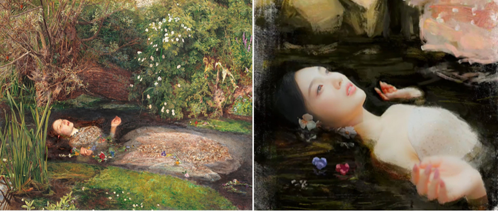
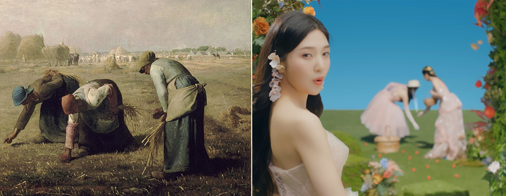
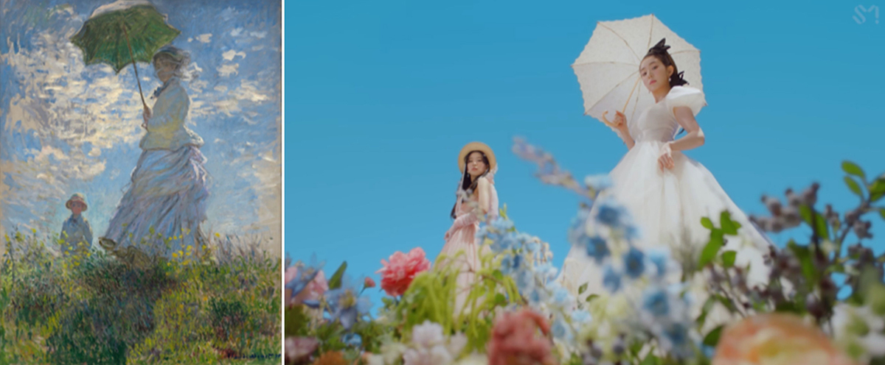
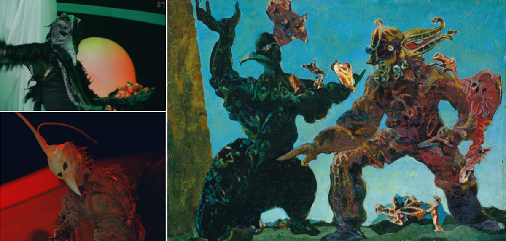
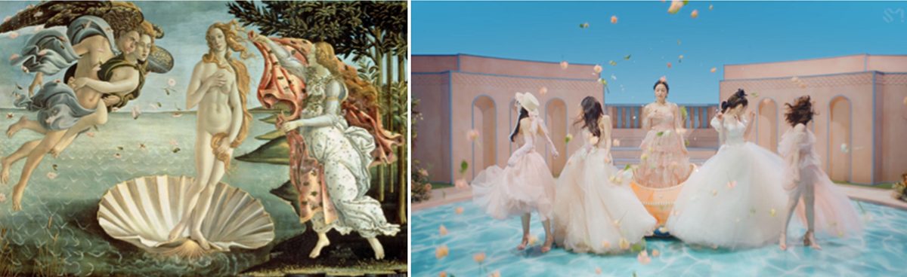
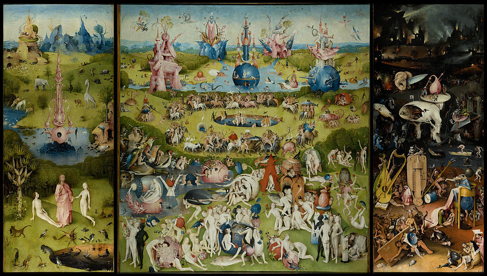

Chủ nhật, 10/4/2022, 00:00 (GMT+7)
'Feel My Rhythm': Bữa tiệc hội họa của Red Velvet
Những tác phẩm nghệ thuật kinh điển thế giới được tái hiện trong MV mới của nhóm nhạc Hàn Red Velvet.
Red Velvet 레드벨벳 'Feel My Rhythm' MV. Video: YouTube
Ngày 21/3, Red Velvet phát hành mini album The ReVe Festival 2022 - Feel My Rhythm và MV chủ đề - đánh dấu sự trở lại sau tám tháng. Ca khúc trong MV thuộc thể loại pop dance, được sáng tác dựa trên bản nhạc Air on the G-String của nhà soạn nhạc người Đức Johann Sebastian Bach. Album gồm sáu bài hát, do SM Entertainment phát hành, dịp kỷ niệm sinh nhật lần thứ 337 của Bach. Video: Youtube SMTOWN.

Bài hát với giai điệu trẻ trung, kết hợp cùng những hình ảnh lấy cảm hứng từ các thời kỳ của nghệ thuật hội họa thế giới, từ trường phái ấn tượng đến chủ nghĩa siêu thực.
Mở đầu MV Feel My Rhythm là sự tái hiện bức tranh The Spy (bên trái) - được nghệ sĩ người Pháp Paul Dominique Philippoteaux (1846-1923), vẽ vào khoảng thế kỷ 19.
Tác phẩm thuộc trường phái Rococo, một trào lưu nghệ thuật từ những năm 1700 bắt nguồn từ Pháp. Nó được kế thừa vẻ đẹp xa hoa, lộng lẫy của thời kỳ trước nhưng đồng thời truyền tải cảm xúc tươi mới. Ảnh: invaluable
Phong cách Rococo là tinh hoa được đúc kết từ thời kỳ Baroque trước đó.
Những gam màu trầm và kỹ thuật đánh bóng đổ nhường chỗ cho bảng màu pastel nhã nhặn.
Bên trái là tác phẩm The Swing (1767), đại diện tiêu biểu khi nhắc đến trường phái này.
Tuyệt tác này của họa sĩ người Pháp Jean-Honoré Fragonard (1732-1806), nổi tiếng cuối giai đoạn Rococo.
Tranh ông chủ yếu xoay quanh đề tài tình yêu lứa đôi, tình yêu cuộc sống và những hoạt động của con người. Ảnh: The Wallace Collection
Tác phẩm Nymphs Finding the Head of Orpheus (1892) (trái) của họa sĩ người Anh John William Waterhouse (1849-1917). Ông là danh họa nổi tiếng của trường phái Tiền Raphael - một trào lưu nghệ thuật xuất hiện ở Anh khoảng giữa thế kỷ 19. Trào lưu này xuất phát từ nhóm Pre-Raphaelite Brotherhood, được thành lập năm 1848. Mục tiêu của họ là làm sống lại sự trong sáng, chân thật, ngây thơ và gần gũi thiên nhiên của hội họa thời kỳ trước Phục hưng. Ảnh: Bridgeman Images Art Collections

Bên trái, một trong những tác phẩm nổi bật nhất của thời kỳ này, Ophelia (1852), của họa sĩ người Anh John Everett Millais (1829-1896). Bức tranh gắn liền với vở kịch Hamlet của kịch tác gia huyền thoại William Shakespeare. Ảnh: Bridgeman Images Art Collections

Họa phẩm thuộc trường phái Ấn tượng - La Cueillette des pois (1880) (trái). Bức tranh của Camille Pissarro (1830-1903), họa sĩ nổi tiếng người Pháp, một trong những gương mặt tiêu biểu khi nhắc đến trường phái Ấn tượng và Ấn tượng mới. Ảnh: AFP

Woman with a Parasol (1875) (trái) là bức họa tiêu biểu về niềm khao khát nắm bắt khoảnh khắc và sự ám ảnh muốn biểu hiện những điều mình đã trải qua của Claude Monet (1840-1926), cha đẻ trường phái Ấn tượng. Ảnh: National Gallery of Art

The Barbarians (1937) (phải) của nghệ sĩ người Đức Max Ernst (1891-1976) biểu trưng cho trường phái Siêu thực (Surrealism). Trong MV, chủ nghĩa siêu thực thể hiện qua hình ảnh con cú, quái vật nửa người nửa chim. Ảnh: The Metropolitan Museum of Art

The Birth of Venus (1484-1486) của họa sĩ người Italy Sandro Boticelli (1445-1510) (trái), là một trong những tác phẩm của thời kỳ Phục hưng, có sức ảnh hưởng lớn của lịch sử hội họa thế giới. Ông là họa sĩ tài năng với lối vẽ độc đáo, được miêu tả là "một người ngoài cuộc trong xu hướng chủ đạo của hội họa Italy". Tranh ông thể hiện nhiều tư tưởng tiến bộ, gắn các nhân vật thần thoại với đời thực. Ảnh: Uffizi Gallery

Cuối MV xuất hiện một chi tiết trong tác phẩm The Garden of Earthly Delights (1490-1510) của Hieronymus Bosch (1450-1516), người mở đầu cho thời kỳ hoàng kim của hội họa Hà Lan. Bức tranh là một bức tam liên họa (tác phẩm nghệ thuật được chia thành ba phần, hoặc ba tấm điêu khắc có thể gập lại, mở ra), miêu tả ba cảnh sống ở ba không gian: thiên đàng - trần gian - địa ngục. Ảnh: Museo del Prado
Theo Sportskeeda, album trước khi lên kệ đã có hơn nửa triệu bản đặt trước. Đến nay, Feel My Rhythm xếp thứ ba trên bảng xếp hạng Melon TOP100.
Quế Chi